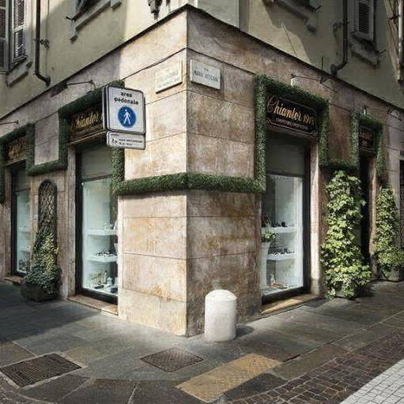

mobirise builder
Chiantor, dal 1918 si occupa di gioielleria, argenteria, gioielli d'epoca, perle, coralli, pietre dure, pietre preziose e semipreziose. Esegue tagli su pietre, incisioni di stemmi, infilatura collane e dispone di un laboratorio artigianale di gioielleria; fornisce, inoltre, componenti in oro e argento e strumenti per gemmologia. Tutto lo staff, cortese e qualificato, sarà lieto di accogliervi presso la sede di via Maria Vittoria, 2 angolo via Lagrange a Torino.
